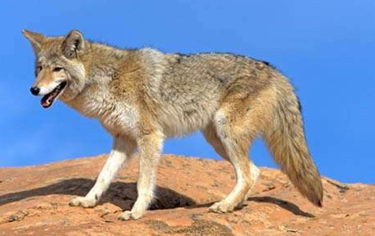

{kind=link}

O cavalo é uma das duas subespécies existentes de Equus ferus. É um mamífero perissodáctilo pertencente à família taxonômica Equidae. O cavalo evoluiu há entre 45 milhões a 55 milhões de anos, desde uma pequena criatura com vários dedos, o Eohippus, até o animal grande e com um único dedo de hoje.

Camaleão refere-se a todos os répteis pertencentes à família Chamaeleonidae. É uma das mais conhecidas famílias de lagartos, distribuídos na África, sul da Europa e da Ásia. Há cerca de 80 espécies de camaleões, a maior parte delas na África, ao sul do Saara, estando também presentes em Portugal e na Espanha

A Orca é o membro da família dos golfinhos de maior porte e é um superpredador versátil, que inclui na sua dieta presas como peixes, moluscos, aves, tartarugas, focas, tubarões e animais de tamanho maior quando caçam em grupo, como por exemplo baleias.

Coiote, às vezes é chamado de chacal americano por zoólogos, é um mamífero, membro da família Canidae e do gênero Canis. Os coiotes são encontrados apenas na América do Norte e Central. Geralmente vivem sós, mas podem se organizar em matilhas ocasionalmente. Coiotes vivem em média 6 anos.

Bubalus é um gênero da família Bovidae, sub-família Bovinae, que foi amplamente distribuído na Eurásia no Pleistoceno.